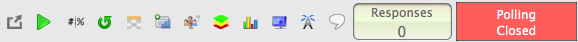
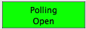
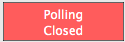

### Code for the automation of TurningPoint in an experimental setting. ### License: GNU General Public License v3 ### Developed at Barnard College, NY. 2016. ### Maintainer: Benjamin Rosner, brosner@barnard.edu ## Debuging Options # Debug.on(3) # Comment this line to disable debug. ## Configure our patterns. poll_closed_no_response = Pattern().exact() poll_open = Pattern().exact() poll_closed = Pattern().exact() no_response = Pattern().exact() # The number 0 has_response = Pattern().exact() # The number 1 ## Functions # This hotkey will both OPEN and CLOSE TurningPoint polling on Mac OSx. def toggle_polling(): type("9", Key.ALT + Key.CMD) # This will move PowerPoint forward one slide and trigger polling to reopen. def next_slide(): switchApp("PowerPoint") type(Key.SPACE) toggle_polling() sleep(1) # TurningPoint is sluggish... # This is called when we have a response. def haveResponse(): sleep(1) # We give the participant ONE second to modify their response. toggle_polling() # now close polling... ## Find the TurningPoint polling toolbar. This MATCH is saved as our search region to limit what we're observing. toolbar_region = wait(poll_closed_no_response, FOREVER) setWaitScanRate(20) # Increase the speed at which we observe the region for changes. Scan 50 TPS. ## START OF THE EXPERIMENT'S CODE # This is is the first event and BEGINS polling on the first slide. # Everything after this point is automatic and the experiment runs inself. # Terminate execution by pressing COMMAND + SHIFT + C if toolbar_region.exists(poll_closed_no_response, 10): print('Starting...') ## Main loop will open and close polling until terminated. while True: # The logical loop. while True: if toolbar_region.exists(poll_closed,0): toggle_polling() # Try to open polling sleep(1) break else: # We have a response if the following event triggers... toolbar_region.wait(has_response, FOREVER) haveResponse() next_slide()